Required packages:
library(sfcr)
library(tidyverse)
#> ── Attaching packages ─────────────────────────────────────── tidyverse 1.3.1 ──
#> ✔ ggplot2 3.3.5 ✔ purrr 0.3.4
#> ✔ tibble 3.1.5 ✔ dplyr 1.0.7
#> ✔ tidyr 1.1.4 ✔ stringr 1.4.0
#> ✔ readr 2.0.2 ✔ forcats 0.5.1
#> ── Conflicts ────────────────────────────────────────── tidyverse_conflicts() ──
#> ✖ dplyr::filter() masks stats::filter()
#> ✖ dplyr::lag() masks stats::lag()We start this notebook with the model REG, that represents a country with two regions and a single monetary and fiscal authority. This model is presented in Godley and Lavoie (2007, 171–87).
This model draws upon the PC model, dividing its private sector into two entities: “north” and “south”.
From this model onward there will be a proliferation of subscripts and superscripts. If not stated otherwise, I will try to follow the convention below when naming the variables:
| Variable name | subscript | _SUPERSCRIPT | result |
|---|---|---|---|
| Y | _N | Y_N | |
| B | h | _S | Bh_S |
As usual, we start by writing down the equations, exogenous variables, and parameters:
reg_eqs <- sfcr_set(
Y_N ~ C_N + G_N + X_N - IM_N,
Y_S ~ C_S + G_S + X_S - IM_S,
IM_N ~ mu_N * Y_N,
IM_S ~ mu_S * Y_S,
X_N ~ IM_S,
X_S ~ IM_N,
YD_N ~ Y_N - TX_N + r[-1] * Bh_N[-1],
YD_S ~ Y_S - TX_S + r[-1] * Bh_S[-1],
TX_N ~ theta * ( Y_N + r[-1] * Bh_N[-1] ),
TX_S ~ theta * ( Y_S + r[-1] * Bh_S[-1] ),
V_N ~ V_N[-1] + ( YD_N - C_N ),
V_S ~ V_S[-1] + ( YD_S - C_S ),
C_N ~ alpha1_N * YD_N + alpha2_N * V_N[-1],
C_S ~ alpha1_S * YD_S + alpha2_S * V_S[-1],
Hh_N ~ V_N - Bh_N,
Hh_S ~ V_S - Bh_S,
Bh_N ~ V_N * ( lambda0_N + lambda1_N * r - lambda2_N * ( YD_N/V_N ) ),
Bh_S ~ V_S * ( lambda0_S + lambda1_S * r - lambda2_S * ( YD_S/V_S ) ),
TX ~ TX_N + TX_S,
G ~ G_N + G_S,
Bh ~ Bh_N + Bh_S,
Hh ~ Hh_N + Hh_S,
Bs ~ Bs[-1] + ( G + r[-1] * Bs[-1] ) - ( TX + r[-1] * Bcb[-1] ),
Hs ~ Hs[-1] + Bcb - Bcb[-1],
Bcb ~ Bs - Bh
)
reg_ext <- sfcr_set(
r ~ 0.025,
G_S ~ 20,
G_N ~ 20,
mu_N ~ 0.15,
mu_S ~ 0.15,
alpha1_N ~ 0.7,
alpha1_S ~ 0.7,
alpha2_N ~ 0.3,
alpha2_S ~ 0.3,
lambda0_N ~ 0.67,
lambda0_S ~ 0.67,
lambda1_N ~ 0.05,
lambda1_S ~ 0.05,
lambda2_N ~ 0.01,
lambda2_S ~ 0.01,
theta ~ 0.2
)We can now simulate the model, adding also the hidden equation to spot any errors in the equations1:
reg <- sfcr_baseline(reg_eqs, reg_ext, 100, hidden = c("Hh" = "Hs"))We start by investigating some aspects of the stationary (steady) state of the REG model.
First, we calculate the trade balance and government deficit for each region:
reg <- reg %>%
mutate(TB_N = X_N - IM_N,
TB_S = X_S - IM_S,
GB_N = TX_N - (G_N + dplyr::lag(r) * dplyr::lag(Bh_N)),
GB_S = TX_S - (G_S + dplyr::lag(r) * dplyr::lag(Bh_S)))As always, we reshape the model object to plot. I will also create an extra column region to indicate whether the variable relates to the N or S region. Global variables like G and Hh are classified as NA region.
To do so I used the case_when() function from dplyr, and I searched for the "_N" or "_S" components in each variable name with the str_detect() function from stringr. Both packages are part of the tidyverse packages.
These operations are “piped” together in a single call.
reg_long <- reg %>%
pivot_longer(cols = -period) %>%
mutate(region = case_when(
str_detect(name, '_N') ~ "North",
str_detect(name, "_S") ~ "South",
# `T` means everything else inside
# the case_when function
T ~ NA_character_
))I will also make an auxiliary function that create the balances, reshape the model, and add the region group to avoid repeating this code for every new model:
to_long <- function(model) {
model %>%
mutate(TB_N = X_N - IM_N,
TB_S = X_S - IM_S,
GB_N = TX_N - (G_N + dplyr::lag(r) * dplyr::lag(Bh_N)),
GB_S = TX_S - (G_S + dplyr::lag(r) * dplyr::lag(Bh_S)),
deltaV_N = V_N - lag(V_N),
deltaV_S = V_S - lag(V_S)) %>%
pivot_longer(cols = -period) %>%
mutate(region = case_when(
str_detect(name, '_N') ~ "North",
str_detect(name, "_S") ~ "South",
# `T` means everything else inside
# the case_when function
T ~ NA_character_
))
}
reg_long %>%
filter(name %in% c("GB_N", "GB_S", "TB_N", "TB_S")) %>%
ggplot(aes(x = period, y = value)) +
geom_line(aes(linetype = name), size = 1, alpha = 0.5) +
facet_wrap(~region)
#> Warning: Removed 2 row(s) containing missing values (geom_path).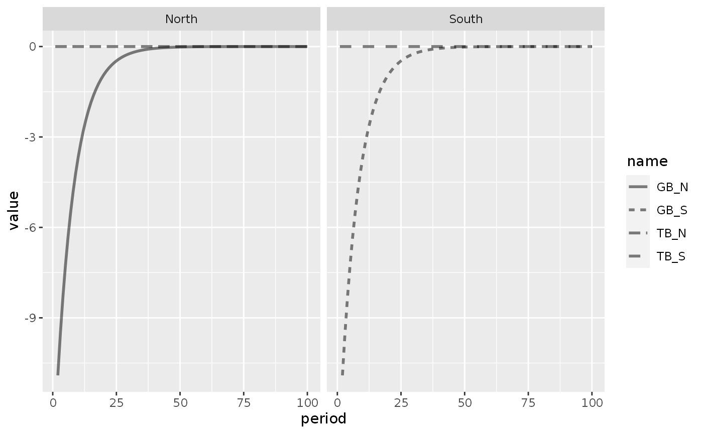
With this Figure we note that the model is correctly specified since the sector balances converge to equality as was expected from equations 6.30 to 6.32 from Godley and Lavoie (2007, 177). Below I reproduce equation 6.32, an important result that will be used often in this notebook2:
\[ G_T^N - T^N = IM^N - X^N \]
Also, in this example, both regions are exactly balanced, with their sectoral balances equal to zero. This is, as Godley and Lavoie (2007, 179), a super stationary state that is achieved because all the parameters are the same for the both regions. There is nothing in the system that will lead to this result. The reader is invited to change the parameters by her/himself to check this claim.
bs_reg <- sfcr_matrix(
columns = c("North_HH", "South_HH", "Government", "Central Bank"),
codes = c("nh", "sh", "g", "cb"),
c("Money", nh = "+Hh_N", sh = "+Hh_S", cb = "-Hs"),
c("Bills", nh = "+Bh_N", sh = "+Bh_S", g = "-Bs", cb = "+Bcb"),
c("Wealth", nh = "-V_N", sh = "-V_S", g = "V_N + V_S")
)Validate:
sfcr_validate(bs_reg, reg, "bs")
#> Water tight! The balance-sheet matrix is consistent with the simulated model.
tfm_reg <- sfcr_matrix(
columns = c("North_HH", "North_Firms", "South_HH", "South_Firms", "Government", "Central Bank"),
codes = c("nh", "nf", "sh", "sf", "g", "cb"),
c("Consumption", nh = "-C_N", nf = "+C_N", sh = "-C_S", sf = "+C_S"),
c("Govt. Exp", nf = "+G_N", sf = "+G_S", g = "-G"),
c("North X to South", nf = "+X_N", sf = "-IM_S"),
c("South X to North", nf = "-IM_N", sf = "+X_S"),
c("GDP", nh = "+Y_N", nf = "-Y_N", sh = "+Y_S", sf = "-Y_S"),
c("Interest payments", nh = "+r[-1] * Bh_N[-1]", sh = "+r[-1] * Bh_S[-1]", g = "-r[-1] * Bs[-1]", cb = "+r[-1] * Bcb[-1]"),
c("CB Profits", g = "+r[-1] * Bcb[-1]", cb = "-r[-1] * Bcb[-1]"),
c("Taxes", nh = "-TX_N", sh = "-TX_S", g = "+TX"),
c("Ch. cash", nh = "-d(Hh_N)", sh = "-d(Hh_S)", cb = "+d(Hs)"),
c("Ch. bills", nh = "-d(Bh_N)", sh = "-d(Bh_S)", g = "+d(Bs)", cb = "-d(Bcb)")
)Validate:
sfcr_validate(tfm_reg, reg, "tfm")
#> Water tight! The transactions-flow matrix is consistent with the simulated model.
sfcr_sankey(tfm_reg, reg)To see what would happen if there was an increase in the propensity to import in the southern region, we calculate a scenario by adding a shock to reg model:
shock1 <- sfcr_shock(
variables = sfcr_set(mu_S ~ 0.25),
start = 5,
end = 60
)
reg_1 <- sfcr_scenario(
reg,
scenario = shock1,
periods = 60
)I use the to_long() function created earlier to reshape this model:
reg_1long <- to_long(reg_1)And reproduce Figure 6.1 that describes what happens with the variation of the wealth of Southern households, the government balance with this region, and the trade balance of this region:
reg_1long %>%
filter(name %in% c("deltaV_S", "GB_S", "TB_S")) %>%
ggplot(aes(x = period, y = value)) +
geom_line(aes(linetype = name))
#> Warning: Removed 2 row(s) containing missing values (geom_path).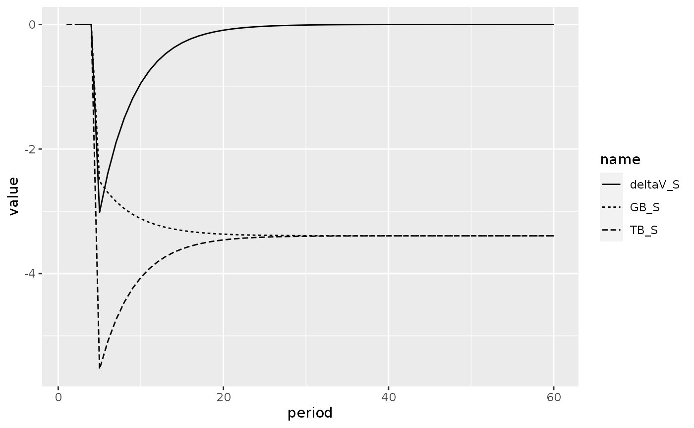
What would happen with the GDP in both regions?
reg_1long %>%
filter(name %in% c("Y_N", "Y_S")) %>%
ggplot(aes(x = period, y = value)) +
geom_line(aes(linetype = name))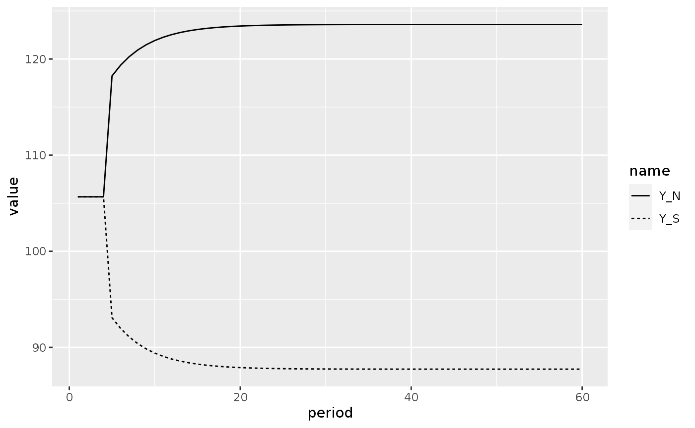
Before we saw that an exogenous increase of the Southern imports caused a higher government deficit in that region. What would happen if we exogenously increase the government deficit instead?
shock2 <- sfcr_shock(
variables = sfcr_set(G_S ~ 25),
start = 5,
end = 60
)
reg_2 <- sfcr_scenario(reg, shock2, 60)
reg_2long <- to_long(reg_2)
reg_2long %>%
filter(name %in% c("Y_N", "Y_S")) %>%
ggplot(aes(x = period, y = value)) +
geom_line(aes(linetype = name)) +
labs(title = "Impact on regrional GDPs")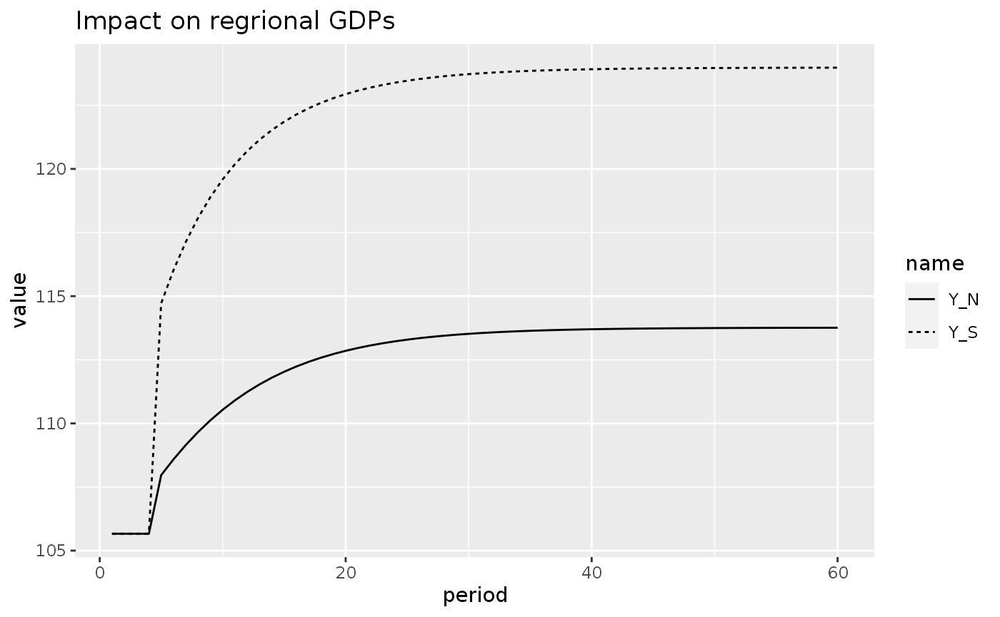
reg_2long %>%
filter(name %in% c("deltaV_S", "TB_S", "GB_S")) %>%
ggplot(aes(x = period, y = value)) +
geom_line(aes(linetype = name))
#> Warning: Removed 2 row(s) containing missing values (geom_path).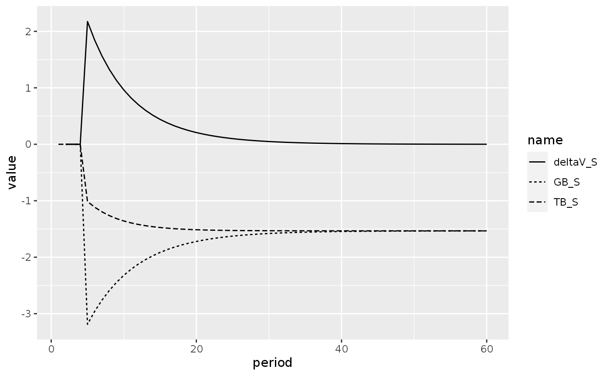
One of the puzzling results of model PC was that an increase in the propensity to save led to higher long-run output. This results is in contrast with the post-Keynesian “paradox of thrift”. what would happen in model REG if the households of one of its regions increased its propensity to save?
To check it, we add a shock to model REG, creating a new scenario:
shock3 <- sfcr_shock(
variables = sfcr_set(alpha1_S ~ 0.6),
start = 5,
end = 60
)
reg_3 <- sfcr_scenario(reg, shock3, periods = 60)
reg_3long <- to_long(reg_3)Let’s see what happened with the GDP of both regions:
reg_3long %>%
filter(name %in% c("Y_S", "Y_N")) %>%
ggplot(aes(x = period, y = value)) +
geom_line(aes(linetype = name))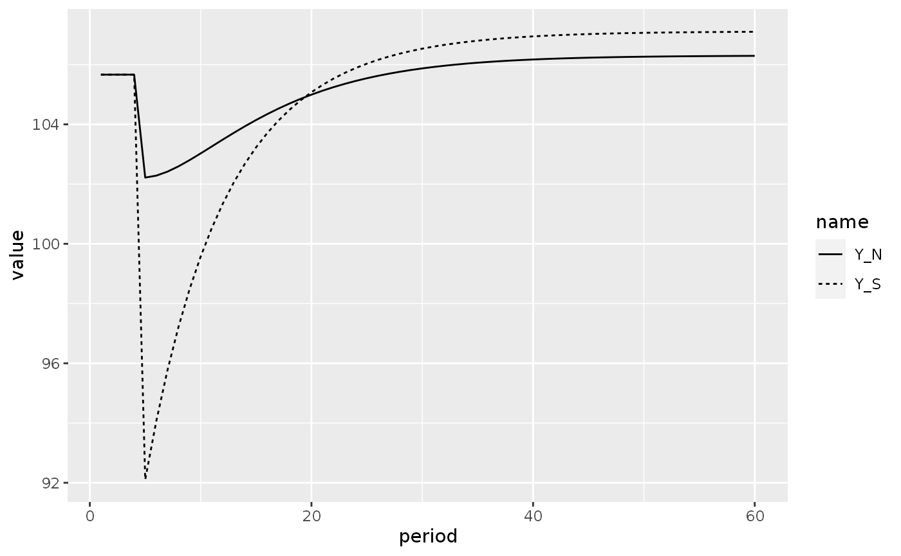
Again we see that higher thriftiness lead to higher steady state output levels, although the short-run effect is markedly negative.
The evolution of the sectoral balances and wealth of the South region is visualized next:
reg_3long %>%
filter(name %in% c("deltaV_S", "TB_S", "GB_S")) %>%
ggplot(aes(x = period, y = value)) +
geom_line(aes(linetype = name))
#> Warning: Removed 2 row(s) containing missing values (geom_path).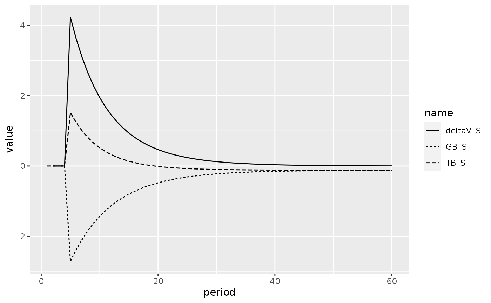
The interesting feature of this exercise is that it shows that it is possible to have government deficits (or surpluses) at the same time as trade surpluses (deficits), but only in the transitional period to the new steady state.
The last exercise with this model is to check the effect of an increase in the liquidity preference of Northern households.
shock4 <- sfcr_shock(
variables = sfcr_set(lambda0_S ~ 1),
start = 5,
end = 60
)
reg_4 <- sfcr_scenario(reg, shock4, 60)
reg_4long <- to_long(reg_4)
reg_4long %>%
filter(name %in% c("Y_S", "Y_N")) %>%
ggplot(aes(x = period, y = value)) +
geom_line(aes(linetype = name)) +
labs(title = "Effects on GDP")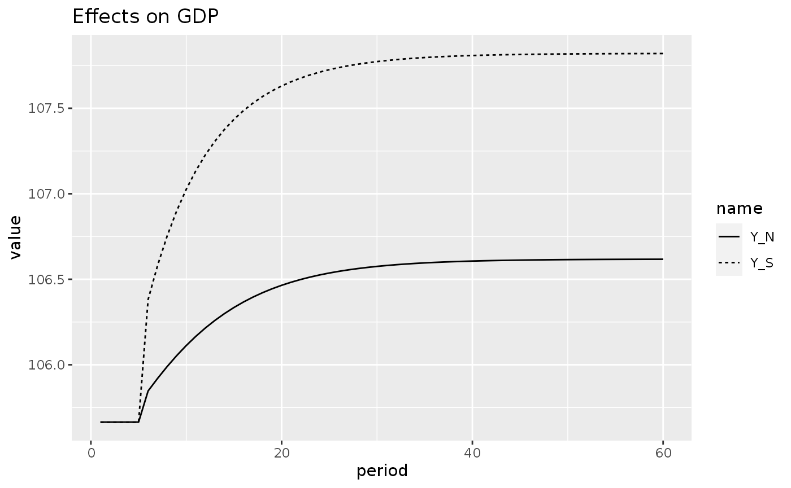
reg_4long %>%
filter(name %in% c("deltaV_S", "TB_S", "GB_S")) %>%
ggplot(aes(x = period, y = value)) +
geom_line(aes(linetype = name)) +
labs(title = "Effects on sectoral balances")
#> Warning: Removed 2 row(s) containing missing values (geom_path).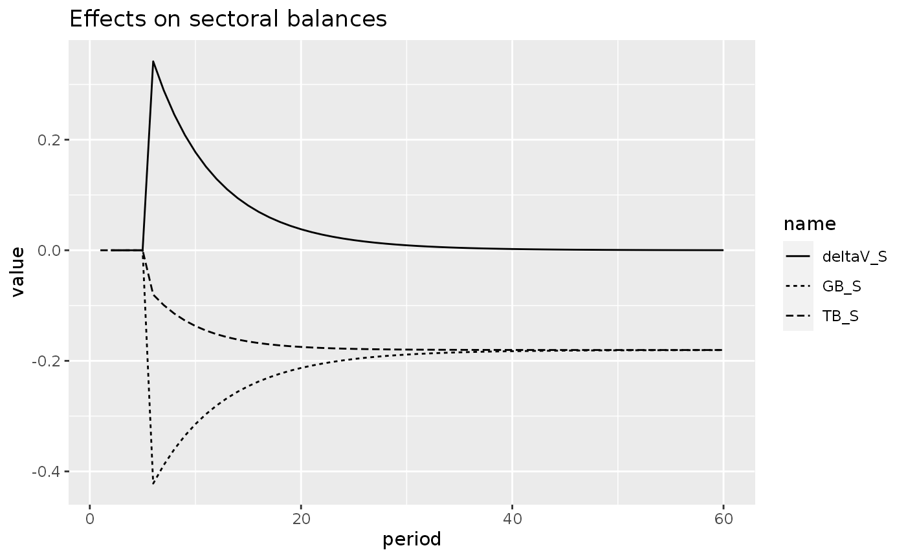
As we can see, a decrease in liquidity preference leads to higher stationary output in both regions. The higher wealth in the form of bonds lead to more interest payments, which initially increases the government deficit but this effect dies out when consumption out of wealth picks up. The Southern region ends up with a twin deficit.
It is also noteworthy that the size of this effect is rather small.
We are finally ready to create a model with two countries, two governments, two currencies!
Without further adue, let’s write the equations, parameters, and exogenous values.
open_eqs <- sfcr_set(
Y_N ~ C_N + G_N + X_N - IM_N,
Y_S ~ C_S + G_S + X_S - IM_S,
IM_N ~ mu_N * Y_N,
IM_S ~ mu_S * Y_S,
X_N ~ IM_S / xr,
X_S ~ IM_N * xr,
YD_N ~ Y_N - TX_N + r_N[-1] * Bh_N[-1],
YD_S ~ Y_S - TX_S + r_S[-1] * Bh_S[-1],
TX_N ~ theta_N * ( Y_N + r_N[-1] * Bh_N[-1] ),
TX_S ~ theta_S * ( Y_S + r_S[-1] * Bh_S[-1] ),
V_N ~ V_N[-1] + ( YD_N - C_N ),
V_S ~ V_S[-1] + ( YD_S - C_S ),
C_N ~ alpha1_N * YD_N + alpha2_N * V_N[-1],
C_S ~ alpha1_S * YD_S + alpha2_S * V_S[-1],
Hh_N ~ V_N - Bh_N,
Hh_S ~ V_S - Bh_S,
Bh_N ~ V_N * ( lambda0_N + lambda1_N * r_N - lambda2_N * ( YD_N/V_N ) ),
Bh_S ~ V_S * ( lambda0_S + lambda1_S * r_S - lambda2_S * ( YD_S/V_S ) ),
Bs_N ~ Bs_N[-1] + ( G_N + r_N[-1] * Bs_N[-1] ) - ( TX_N + r_N[-1] * Bcb_N[-1] ),
Bs_S ~ Bs_S[-1] + ( G_S + r_S[-1] * Bs_S[-1] ) - ( TX_S + r_S[-1] * Bcb_S[-1] ),
Bcb_N ~ Bs_N - Bh_N,
Bcb_S ~ Bs_S - Bh_S,
or_N ~ or_N[-1] + (( Hs_N - Hs_N[-1] - ( Bcb_N - Bcb_N[-1] ) )/pg_N),
or_S ~ or_S[-1] + (( Hs_S - Hs_S[-1] - ( Bcb_S - Bcb_S[-1] ) )/pg_S),
Hs_N ~ Hh_N,
Hs_S ~ Hh_S,
pg_S ~ pg_N * xr,
deltaor_S ~ or_S - or_S[-1],
deltaor_N ~ - (or_N - or_N[-1])
)
open_ext <- sfcr_set(
xr ~ 1,
pg_N ~ 1,
r_N ~ 0.025,
r_S ~ 0.025,
G_S ~ 20,
G_N ~ 20,
mu_N ~ 0.15,
mu_S ~ 0.15,
alpha1_N ~ 0.7,
alpha1_S ~ 0.8,
alpha2_N ~ 0.3,
alpha2_S ~ 0.2,
lambda0_N ~ 0.67,
lambda0_S ~ 0.67,
lambda1_N ~ 0.05,
lambda1_S ~ 0.05,
lambda2_N ~ 0.01,
lambda2_S ~ 0.01,
theta_N ~ 0.2,
theta_S ~ 0.2
)The hidden equation in this model is:
\[ \Delta or^S = \Delta or^N \]
Hence, we created two auxiliary variables: deltaor_S and deltaor_N. These are the variation of gold reserves in each country at each period, with the deltaor_N variable multiplied by -1. The reason is that the hidden equation argument only recognize the names of the variables and test for their equality.
Note also that at least something must be different from one country to the other. Otherwise, the model will simulate two twin economies. In this case, we made the propensities to consume out of disposable income and wealth different.
We can simulate the model:
open <- sfcr_baseline(open_eqs, open_ext, periods = 100, hidden = c("deltaor_S" = "deltaor_N"), .hidden_tol = 0.01)Let’s also adapt our to_long() function to incorporate the new questions we want to investigate with the OPEN model:
to_long <- function(model) {
model %>%
mutate(TB_N = X_N - IM_N,
TB_S = X_S - IM_S,
GB_N = TX_N - (G_N + dplyr::lag(r_N) * dplyr::lag(Bh_N)),
GB_S = TX_S - (G_S + dplyr::lag(r_S) * dplyr::lag(Bh_S)),
deltaV_N = V_N - lag(V_N),
deltaV_S = V_S - lag(V_S),
deltaBcb_N = Bcb_N - lag(Bcb_N),
deltaBcb_S = Bcb_S - lag(Bcb_S),
deltaHs_N = Hs_N - lag(Hs_N),
deltaHs_S = Hs_S - lag(Hs_S)) %>%
pivot_longer(cols = -period) %>%
mutate(country = case_when(
str_detect(name, '_N') ~ "North",
str_detect(name, "_S") ~ "South",
# `T` means everything else inside
# the case_when function
T ~ NA_character_
))
}And let’s plot the main variables to check if the model arrived into the super stationary steady state:
open_long <- to_long(open)
open_long %>%
filter(name %in% c("TB_S", "TB_N", "GB_N", "GB_S")) %>%
ggplot(aes(x = period, y = value)) +
geom_line(aes(linetype = name)) +
facet_wrap(~country)
#> Warning: Removed 2 row(s) containing missing values (geom_path).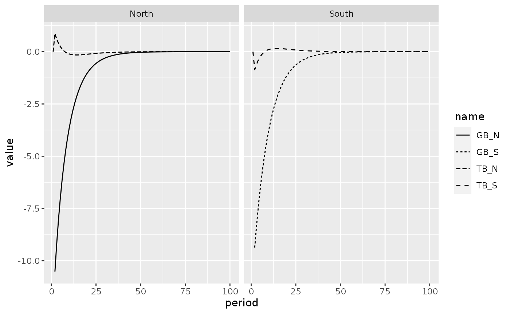
The “Sum” column of the balance-sheet matrix does not sum to zero in all of its entries. Therefore, we must add a “Sum” column by hand with the sfcr_matrix() function in order to have it validated with sfcr_validate().
bs_open <- sfcr_matrix(
columns = c("North_HH", "North_Govt", "North_CB", "South_HH", "South_Govt", "South_CB", "Sum"),
codes = c("nh", "ng", "ncb", "sh", "sg", "scb", "s"),
c("Money", nh = "+Hh_N", ncb = "-Hs_N", sh = "+Hh_S", scb = "-Hs_S"),
c("Bills", nh = "+Bh_N", ng = "-Bs_N", ncb = "+Bcb_N", sh = "+Bh_S", sg = "-Bs_S", scb = "+Bcb_S"),
c("Gold", ncb = "+or_N * pg_N * xr", scb = "or_S * pg_S", s = "or_N * pg_N * xr + (or_S * pg_S)"),
c("Wealth", nh = "-V_N", ng = "Bs_N", sh = "-V_S", sg = "Bs_S", s = "-(or_N * pg_N * xr + (or_S * pg_S))")
)Validate:
sfcr_validate(bs_open, open, "bs")
#> Water tight! The balance-sheet matrix is consistent with the simulated model.
tfm_open <- sfcr_matrix(
columns = c("N_Households", "N_Firms", "N_Govt", "N_CentralBank", "S_Households", "S_Firms", "S_Govt", "S_CentralBank"),
codes = c("nh", "nf", "ng", "ncb", "sh", "sf", "sg", "scb"),
c("Consumption", nh = "-C_N", nf = "+C_N", sh = "-C_S", sf = "+C_S"),
c("Govt. Exp", nf = "+G_N", ng = "-G_N", sf = "+G_S", sg = "-G_S"),
c("North X to South", nf = "+X_N * xr", sf = "-IM_S"),
c("South X to North", nf = "-IM_N * xr", sf = "+X_S"),
c("GDP", nh = "+Y_N", nf = "-Y_N", sh = "+Y_S", sf = "-Y_S"),
c("Interest payments", nh = "+r_N[-1] * Bh_N[-1]", ng = "-r_N[-1] * Bs_N[-1]", ncb = "+r_N[-1] * Bcb_N[-1]", sh = "+r_S[-1] * Bh_S[-1]", sg = "-r_S[-1] * Bs_S[-1]", scb = "+r_S[-1] * Bcb_S[-1]"),
c("CB Profits", ng = "+r_N[-1] * Bcb_N[-1]", ncb = "-r_N[-1] * Bcb_N[-1]", sg = "+r_S[-1] * Bcb_S[-1]", scb = "-r_S[-1] * Bcb_S[-1]"),
c("Taxes", nh = "-TX_N", ng = "+TX_N", sh = "-TX_S", sg = "+TX_S"),
c("Ch. cash", nh = "-d(Hh_N)", ncb = "+d(Hs_N)", sh = "-d(Hh_S)", scb = "+d(Hs_S)"),
c("Ch. bills", nh = "-d(Bh_N)", ng = "+d(Bs_N)", ncb = "-d(Bcb_N)", sh = "-d(Bh_S)", sg = "+d(Bs_S)", scb = "-d(Bcb_S)"),
c("Ch. Gold", ncb = "-d(or_N) * pg_N * xr", scb = "-d(or_S) * pg_S")
)Validate:
sfcr_validate(tfm_open, open, "tfm")
#> Water tight! The transactions-flow matrix is consistent with the simulated model.What happens if there is an increase in the propensity to import in the South?
shock1 <- sfcr_shock(
variables = sfcr_set(mu_S ~ 0.25),
start = 5,
end = 60
)
open_1 <- sfcr_scenario(open, scenario = shock1, periods = 60)
open_1l <- to_long(open_1)
open_1l %>%
filter(name %in% c("Y_N", "Y_S")) %>%
ggplot(aes(x = period, y = value)) +
geom_line(aes(linetype = name)) +
labs(title = "Evolution of GDP")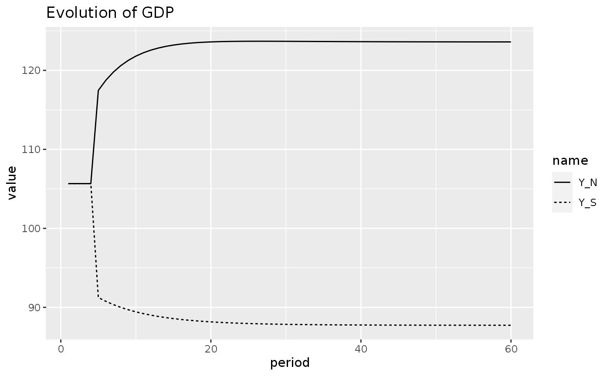
We see that both economies arrive to a new stationary GDP, with the Southern economy being permanently below its initial GDP.
What happen with the trade and government balances?
open_1l %>%
filter(name %in% c("TB_S", "TB_N", "GB_S", "GB_N", "deltaV_S", "deltaV_N")) %>%
ggplot(aes(x = period, y = value)) +
geom_line(aes(linetype = name)) +
facet_wrap(~country) +
labs(title = "Twin deficits/surpluses")
#> Warning: Removed 4 row(s) containing missing values (geom_path).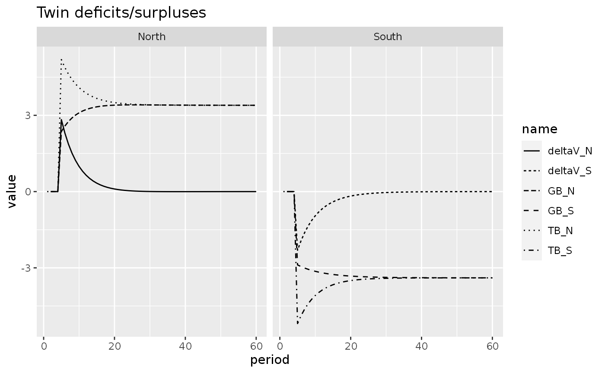
An increase in the propensity to consume leads to a permanent twin deficit in the South economy and a permanent twin surplus in the North economy. This situation makes one wonder: what happens with the gold reserves of both countries?
open_1l %>%
filter(name %in% c("or_S", "or_N")) %>%
ggplot(aes(x = period, y = value)) +
geom_line(aes(linetype = name)) +
labs(title = "Ever falling gold reserves")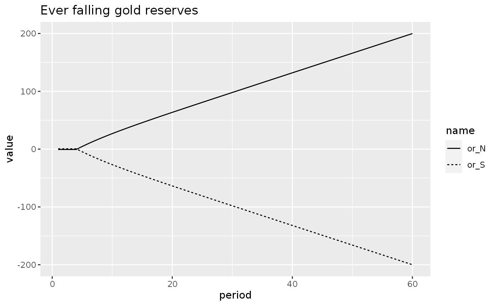
This situation is obviously unsustainable. A country cannot have a ever-falling gold reserves ad-infinitum. However, here it is nice to see what’s happening with the balance sheet of the Southern central bank:
open_1l %>%
filter(name %in% c("deltaHs_S", "deltaBcb_S", "deltaor_S")) %>%
ggplot(aes(x = period, y = value)) +
geom_line(aes(linetype = name)) +
labs(title = "Evolution of the Balance sheet of South Central Bank")
#> Warning: Removed 2 row(s) containing missing values (geom_path).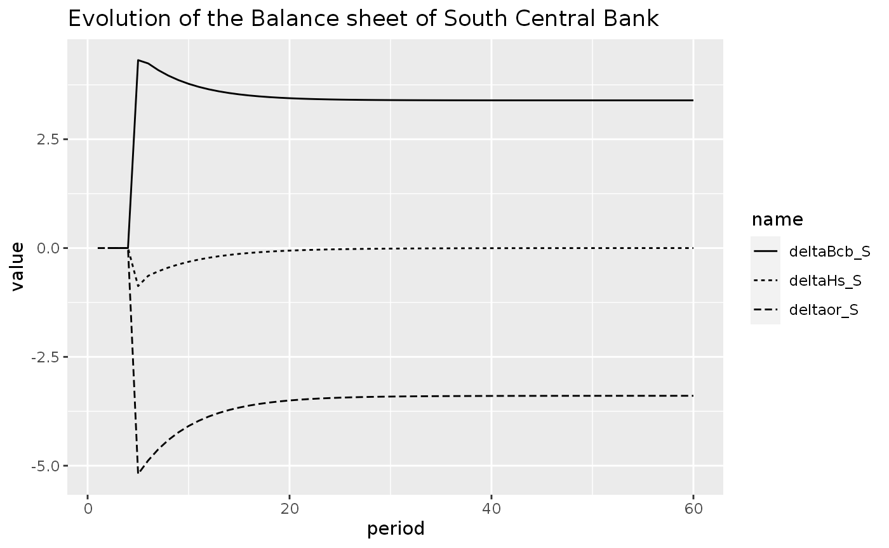
This graph shows the compensation thesis in action: the variation in the money stocks in the economy is equal to zero in the long-run. All the depletion of gold reserves is being compensated by the central bank by acquiring Bonds from the government.
Yet, this model is unsustainable. A country cannot have ever-falling gold reserves (at least not in a gold standard system).
Let’s slightly modify model OPEN to introduce an adjustment mechanism through government expenditures. The idea here is that the government running out of gold will contract pure government expenditures in order to reestablish the balance in its balance of payments.
open2_eqs <- sfcr_set(
open_eqs,
G_N ~ G_N[-1] + phi_N * ( (or_N - or_N[-1]) * pg_N[-1] ),
G_S ~ G_S[-1] + phi_S * ( (or_S - or_S[-1]) * pg_S[-1] )
)
# Remove G_N and G_S from exogenous variables
# Find the ids to exclude
sfcr_set_index(open_ext) %>%
filter(lhs %in% c("G_N", "G_S"))
#> # A tibble: 2 × 3
#> id lhs rhs
#> <int> <chr> <chr>
#> 1 5 G_S 20
#> 2 6 G_N 20
open2_ext <- sfcr_set(
open_ext,
phi_N ~ 0.25,
phi_S ~ 0.25,
exclude = c(5, 6)
)
# open2_exg <- open_exg[1:4]
#
# Add initial values to govt. expenditures
open2_initial <- sfcr_set(
G_N ~ 20,
G_S ~ 20
)
open2 <- sfcr_baseline(open2_eqs, open2_ext, 60, initial = open2_initial, hidden = c("deltaor_N" = "deltaor_S"), .hidden_tol = 0.01)We then add shock1 to this model:
open2_1 <- sfcr_scenario(open2, shock1, 60)
open2_1l <- to_long(open2_1)And we plot the variables:
open2_1l %>%
filter(name %in% c("TB_S", 'TB_N', 'deltaV_N', "deltaV_S", "GB_S", "GB_N")) %>%
ggplot(aes(x = period, y = value)) +
geom_line(aes(linetype = name)) +
facet_wrap(~country)
#> Warning: Removed 4 row(s) containing missing values (geom_path).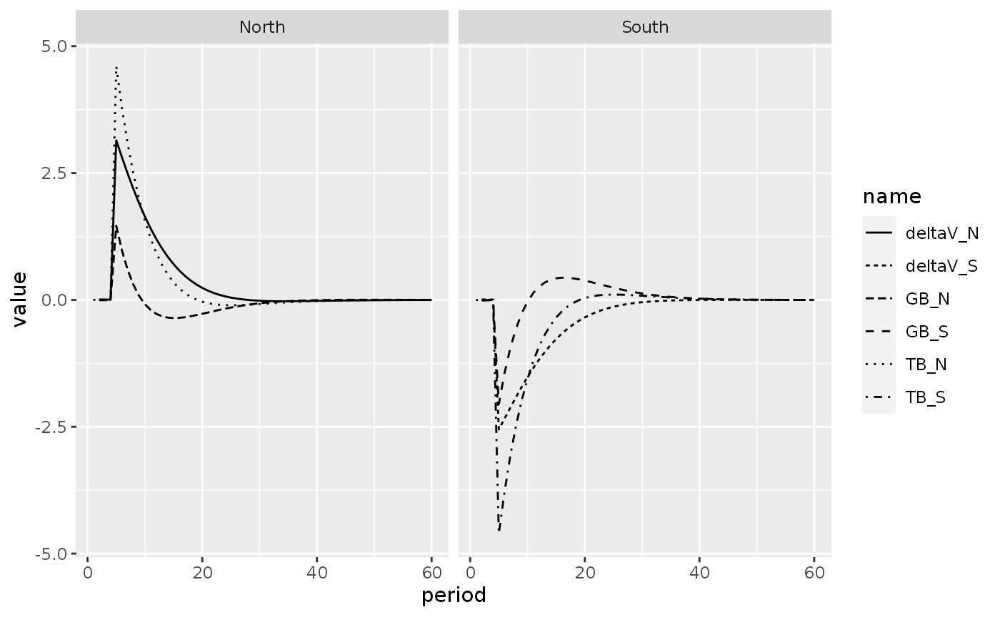
International organizations like the IMF and the WB usually suggest monetary contraction together with fiscal austerity for countries dealing with balance of payments crisis. How would our model fare if we added an adjustment mechanism through interest rates instead?
The answer is simple: it will not adjust. This model inherits from model PC where there higher interest rates actually lead to higher economic activity. Therefore, adjusting the interest rate in response to the balance of payments disequilibrium will only aggravate the problem as it will lead to higher economic activity and henceforth to higher imports.
Let’s take a look at this developments.
#TODO here: the equations for model OPENM should have the percent change in gold reserves as a determinant of interest rates, rather than the absolute change in gold reserves (Source: Zezza)
sfcr_set_index(open_ext) %>%
filter(lhs %in% c("r_N", "r_S"))
#> # A tibble: 2 × 3
#> id lhs rhs
#> <int> <chr> <chr>
#> 1 3 r_N 0.025
#> 2 4 r_S 0.025
open3_eqs <- sfcr_set(
open_eqs,
r_N ~ r_N[-1] - phi_N * ( ((or_N - or_N[-1])/or_N[-1]) * pg_N[-1] ),
r_S ~ r_S[-1] - phi_S * ( ((or_S - or_S[-1])/or_S[-1]) * pg_S[-1] )
)
open3_ext <- sfcr_set(
open_ext,
phi_N ~ 0.005,
phi_S ~ 0.005,
exclude = c(3, 4)
)
# We have to initialize the interest rates now
open3_initial <- list(
r_N ~ 0.025,
r_S ~ 0.025
)
open3 <- sfcr_baseline(open3_eqs, open3_ext, periods = 100, initial = open3_initial,
hidden = c("deltaor_S" = "deltaor_N"), .hidden_tol = 0.01)
open3 %>% select(period, r_N, r_S)
#> # A tibble: 100 × 3
#> period r_N r_S
#> <int> <dbl> <dbl>
#> 1 1 0.025 0.025
#> 2 2 0.0207 0.0293
#> 3 3 0.0171 0.0258
#> 4 4 0.0157 0.0244
#> 5 5 0.0150 0.0236
#> 6 6 0.0147 0.0233
#> 7 7 0.0145 0.0231
#> 8 8 0.0144 0.0231
#> 9 9 0.0145 0.0231
#> 10 10 0.0146 0.0232
#> # … with 90 more rows
open3_l <- to_long(open3)
open3_l %>%
filter(name %in% c("r_N", "r_S")) %>%
ggplot(aes(x = period, y = value)) +
geom_line(aes(linetype = name))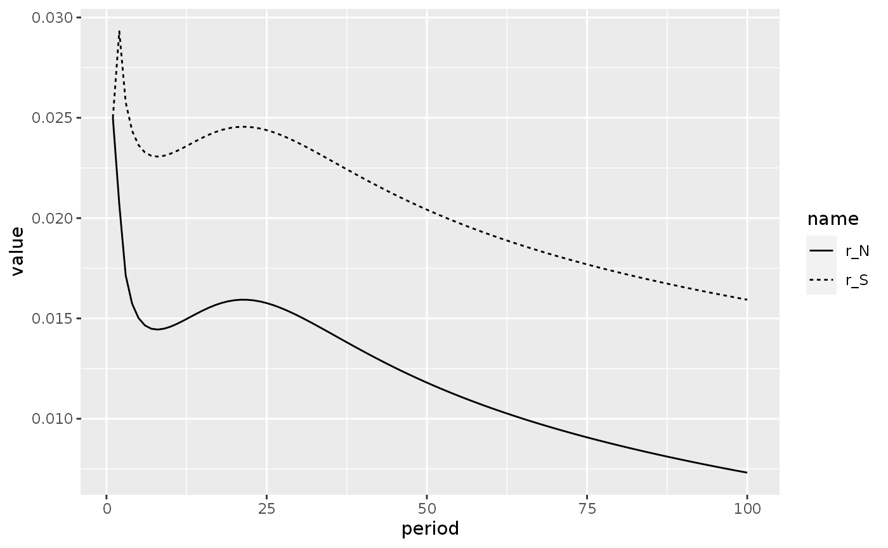
It is even difficult to find a steady state for this model. Play as much as you want to see by yourself.
Let’s try adding a buffer zone around the variation of the gold reserves that would trigger a interest rate increase:
open4_eqs <- sfcr_set(
open_eqs,
r_N ~ if (abs(( (or_N - or_N[-1]) * pg_N[-1] )) > 2) {r_N[-1] - phi_N * ( (or_N - or_N[-1]) * pg_N[-1] )} else {r_N[-1]},
r_S ~ if (abs(( (or_S - or_S[-1]) * pg_S[-1] )) > 2) {r_S[-1] - phi_S * ( (or_S - or_S[-1]) * pg_S[-1] )} else {r_S[-1]}
)
# Broyden and Newton fails to solve -- very unstable model
open4 <- sfcr_baseline(open4_eqs, open3_ext, periods = 50, initial = open3_initial,
hidden = c("deltaor_S" = "deltaor_N"), .hidden_tol = 0.01,
method = "Gauss")
open4_l <- to_long(open4)
open4_l %>%
filter(name %in% c("r_N", "r_S")) %>%
ggplot(aes(x = period, y = value)) +
geom_line(aes(linetype = name)) +
facet_wrap(~country)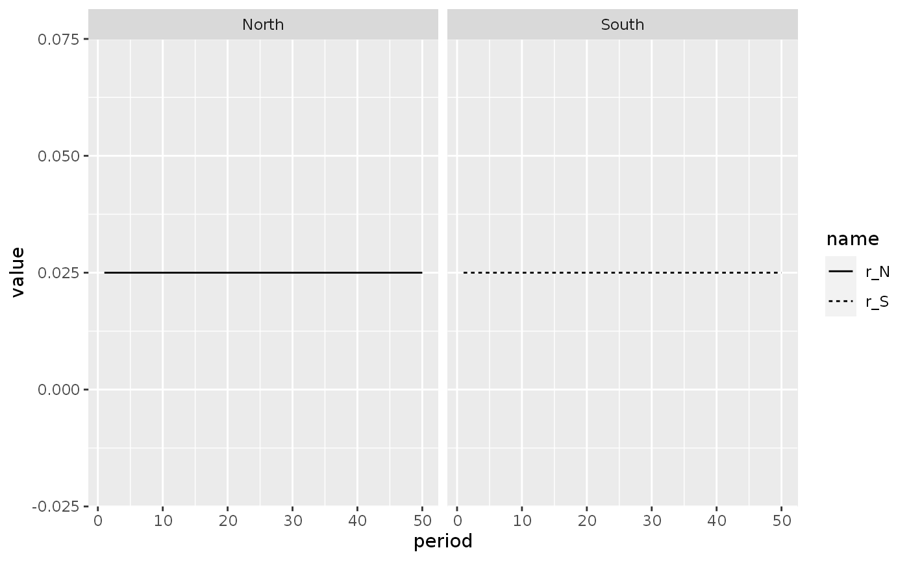 This is a steady state. However, its a very unstable model in which any shock blows it up. In the following experiment I include only 20 periods because the model does not run if I add much more than that.
shock1 <- sfcr_shock(
variables = list(mu_S ~ 0.2),
start = 5,
end = 20
)
open4_1 <- sfcr_scenario(open4, scenario = shock1, periods = 20, method = "Gauss")
open4_1l <- to_long(open4_1)
open4_1l %>%
filter(name %in% c("r_N", "r_S")) %>%
ggplot(aes(x = period, y = value)) +
geom_line(aes(linetype = name))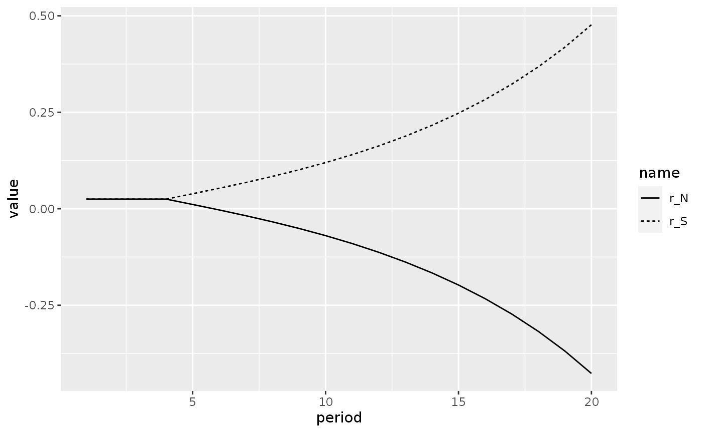 This model obviously explode and I had to use the Gauss-Seidel solver and decrease the number of periods to find some solution to it (as they do in the book).
open4_1l %>%
filter(name %in% c("TB_N", "TB_S", "GB_S", "GB_N")) %>%
ggplot(aes(x = period, y = value)) +
geom_line(aes(linetype = name))
#> Warning: Removed 2 row(s) containing missing values (geom_path).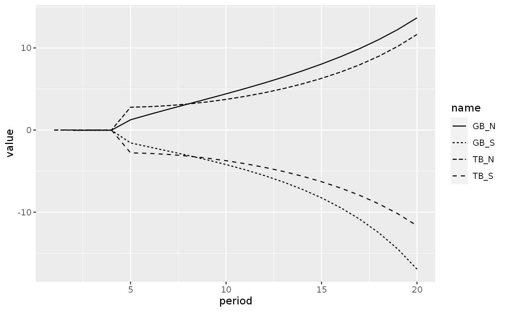
sfcr_dag_blocks_plot(open4_eqs)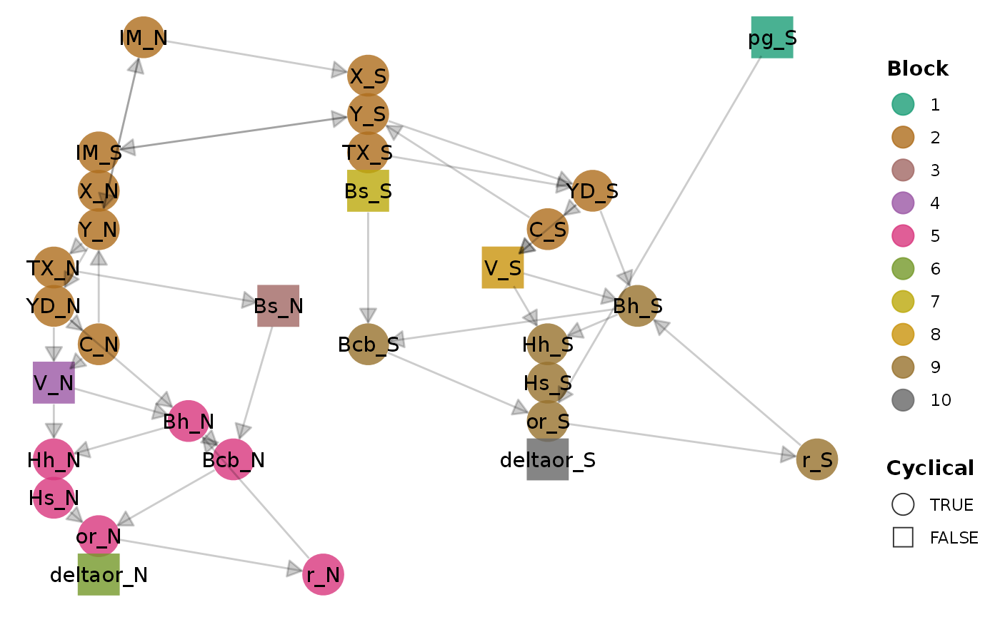
One possibility outlined in the book is to modify the propensity to consume out of disposable income to be a negative function on interest rates:
open4b_eqs <- sfcr_set(
open3_eqs,
alpha1_S ~ alpha10_S - iota_S * r_S,
alpha1_N ~ alpha10_N - iota_N * r_S
)
# Alpha1 becomes endogenous. We need to remove it from the external set
sfcr_set_index(open3_ext) %>%
filter(str_detect(lhs, "alpha1"))
#> # A tibble: 2 × 3
#> id lhs rhs
#> <int> <chr> <chr>
#> 1 7 alpha1_N 0.7
#> 2 8 alpha1_S 0.8
open4b_ext <- sfcr_set(
open3_ext,
alpha10_N ~ 0.7,
alpha10_S ~ 0.8,
iota_S ~ 0.5,
iota_N ~ 0.35,
exclude = c(7, 8)
)
open4b <- sfcr_baseline(open4b_eqs, open4b_ext, 100, initial = open3_initial, hidden = c("deltaor_S" = "deltaor_N"), .hidden_tol = 0.01)
open4b_l <- to_long(open4b)As we can see in the Figure below, this model struggles to find a stable stationary state. What is happening here is that there’s no stabilizing mechanism on the side of the North economy.
open4b_l %>%
filter(name %in% c("r_N", "r_S")) %>%
ggplot(aes(x = period, y = value)) +
geom_line(aes(linetype = name)) +
labs(title = "No stationary state")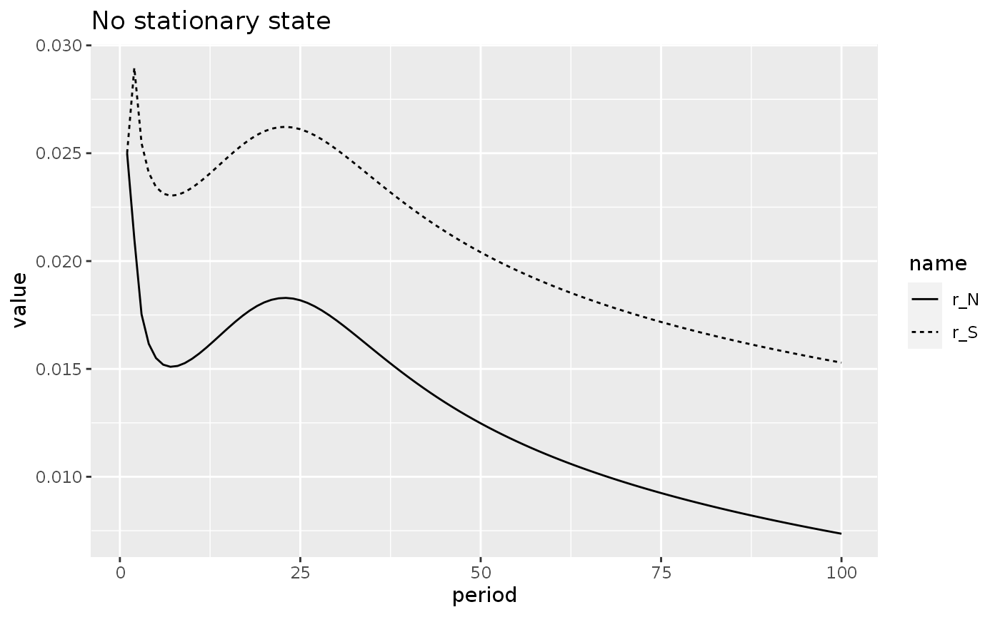
open4b_l %>%
filter(name %in% c("r_N", "r_S")) %>%
ggplot(aes(x = period, y = value)) +
geom_line(aes(linetype = name)) +
labs(
title = "Model OPEN4B",
subtitle = "No stationary state")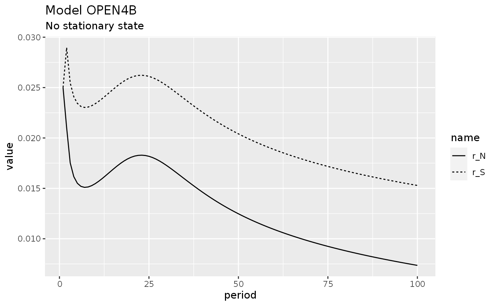
open4b_l %>%
filter(str_detect(name, "TB|GB")) %>%
ggplot(aes(x = period, y = value)) +
geom_line(aes(linetype = name)) +
facet_wrap(~ country) +
labs(
title = "Model OPEN4B",
subtitle = "No stationary state")
#> Warning: Removed 2 row(s) containing missing values (geom_path).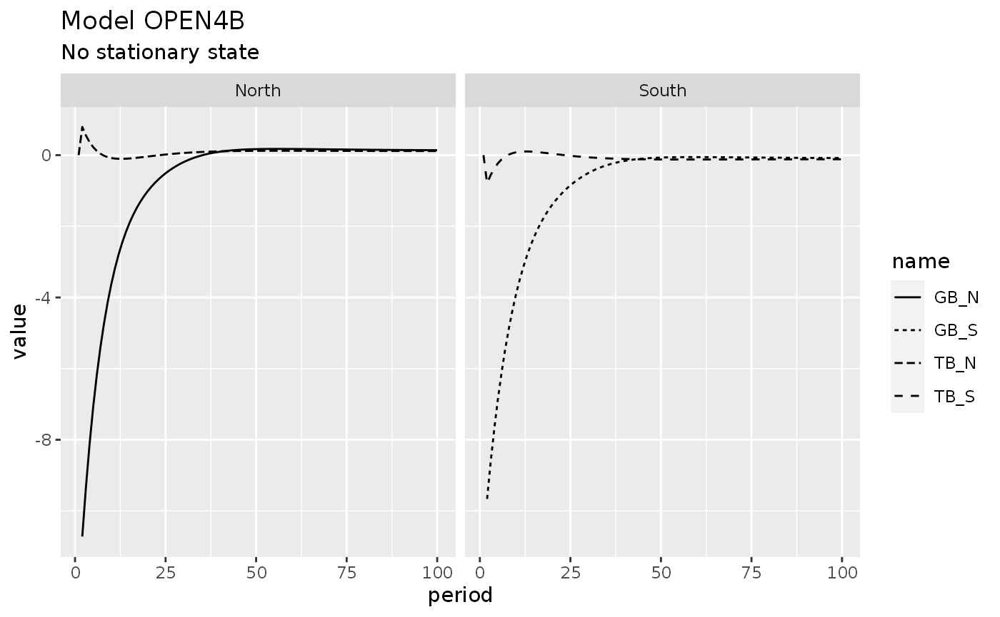
open4b_l %>%
filter(str_detect(name, "YD|V")) %>%
ggplot(aes(x = period, y = value)) +
geom_line(aes(color = name)) +
facet_wrap(~ country) +
labs(
title = "Model OPEN4B",
subtitle = "No stationary state")
#> Warning: Removed 2 row(s) containing missing values (geom_path).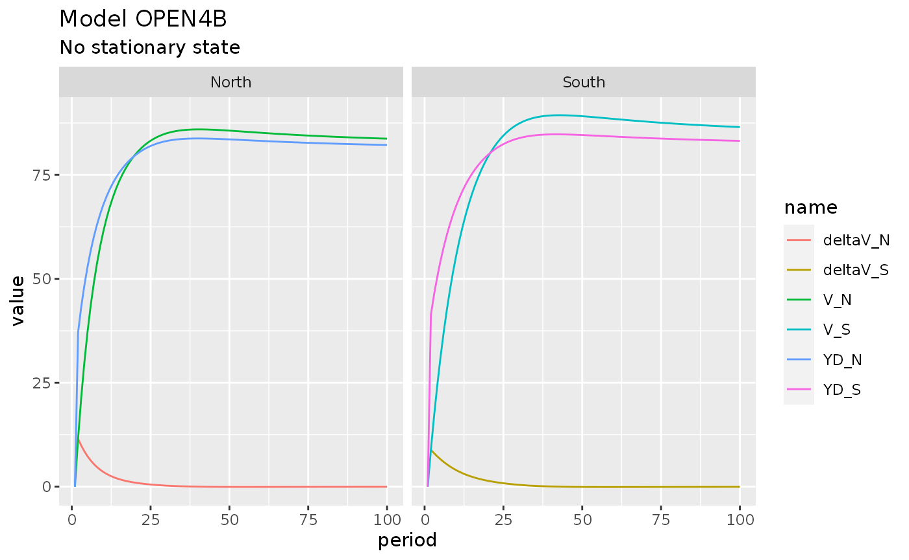
open4b_l %>%
filter(str_detect(name, "Y_")) %>%
ggplot(aes(x = period, y = value)) +
geom_line(aes(linetype = name)) +
facet_wrap(~ country) +
labs(
title = "Model OPEN4B",
subtitle = "No stationary state")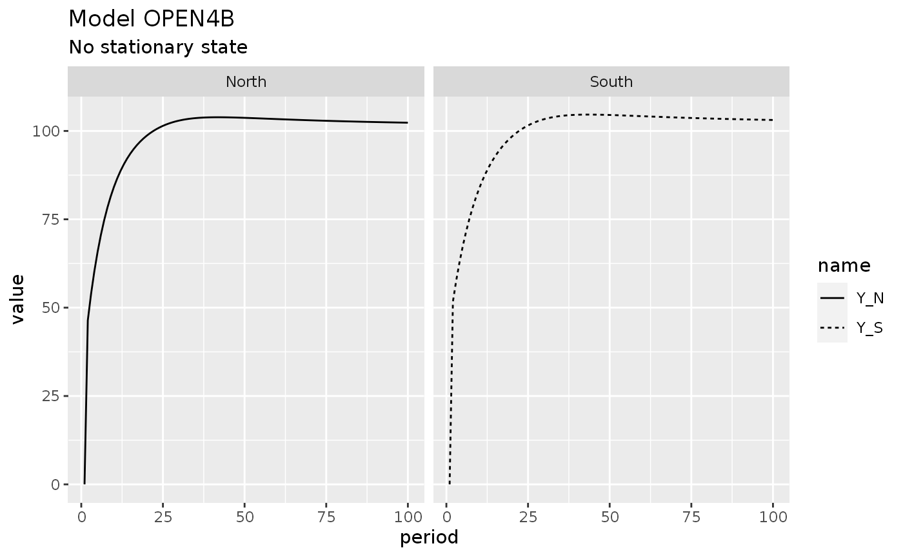
Now, let’s imagine a similar model, but where the central bank react to a trade deficit by decreasing interest rates:
open5_eqs <- sfcr_set(
open_eqs,
r_N ~ r_N[-1] + phi_N * ( (or_N - or_N[-1]) * pg_N[-1] ),
r_S ~ r_S[-1] + phi_S * ( (or_S - or_S[-1]) * pg_S[-1] )
)
sfcr_set_index(open_ext) %>%
filter(lhs %in% c("r_N", "r_S"))
#> # A tibble: 2 × 3
#> id lhs rhs
#> <int> <chr> <chr>
#> 1 3 r_N 0.025
#> 2 4 r_S 0.025
open5_ext <- sfcr_set(
open_ext,
phi_N ~ 0.002,
phi_S ~ 0.002,
exclude = c(3, 4)
)
# We have to initialize the interest rates now
open5_initial <- sfcr_set(
r_N ~ 0.025,
r_S ~ 0.025
)
open5 <- sfcr_baseline(
equations = open5_eqs,
external = open5_ext,
periods = 100,
initial = open3_initial,
hidden = c("deltaor_S" = "deltaor_N"),
.hidden_tol = 0.01)
shock1 <- sfcr_shock(
variables = sfcr_set(mu_S ~ 0.2),
start = 5,
end = 60
)
open5_1 <- sfcr_scenario(open5, scenario = shock1, periods = 60)
open5_1l <- to_long(open5_1)
open5_1l %>%
filter(name %in% c("TB_N", "TB_S", "GB_S", "GB_N")) %>%
ggplot(aes(x = period, y = value)) +
geom_line(aes(linetype = name)) +
facet_wrap(~ country) +
labs(
title = "Model OPEN5",
subtitle = "The puzzling effect of interest rates")
#> Warning: Removed 2 row(s) containing missing values (geom_path).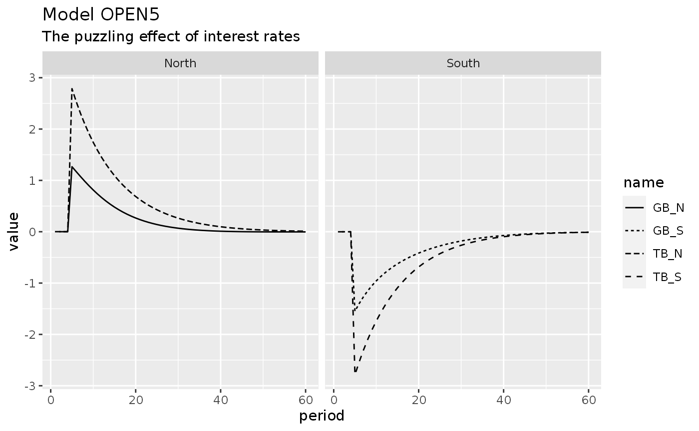
Voilà, we found that in model OPEN a reaction function that decreases interest rates brings the model back to a stable equilibrium.
To understand the importance of the hidden argument, I invite the reader to change the first equation to Y_N ~ C_N + G_N + X_N + IM_N. That’s obviously a mistake as IM_N should be deducted from the model. However, it is a easy-to-make typo when copying the equations from the book. The model will run and converge to answers in each period but they will make little sense. Setting the hidden equation would throw an error instead, inviting the reader to re-check the equations.↩
Also note that I wrote the balances in their standard form, i.e., I called the “trade balance” as exports minus imports, and “government balance” as taxes minus expenditures. The results are the same because they should converge to zero in a correctly specified model.↩